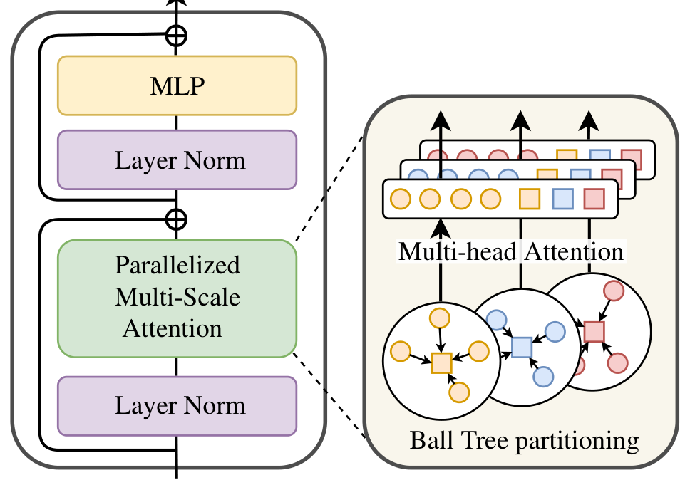
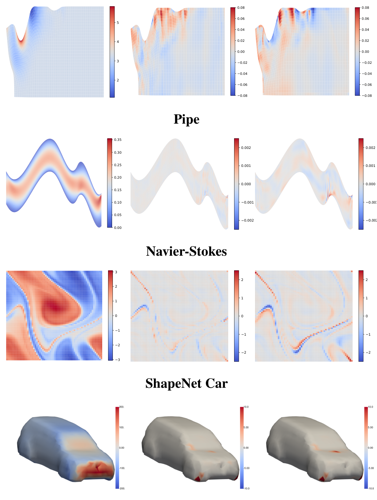
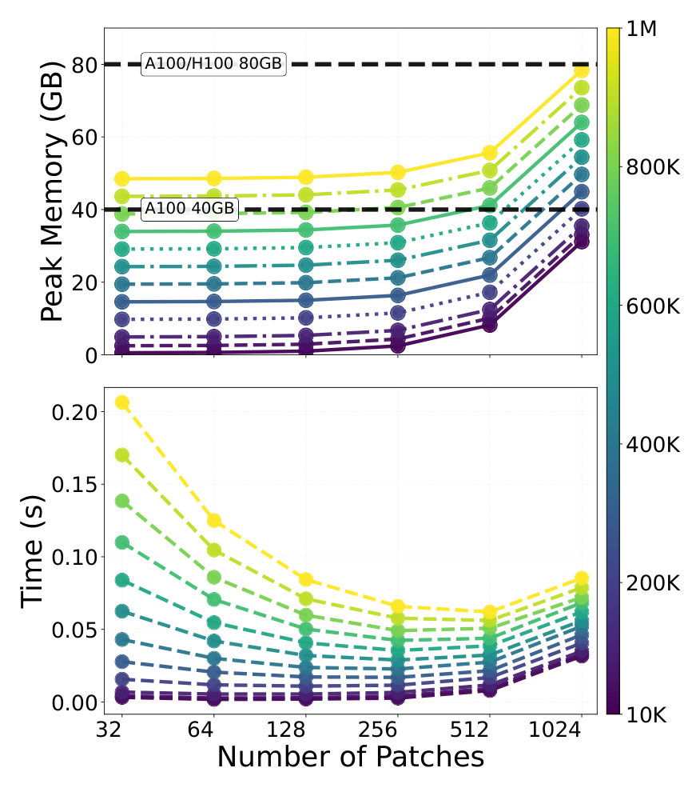
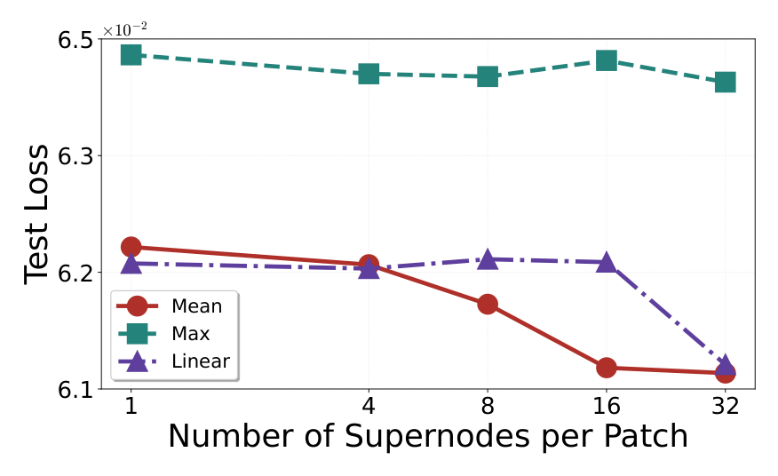
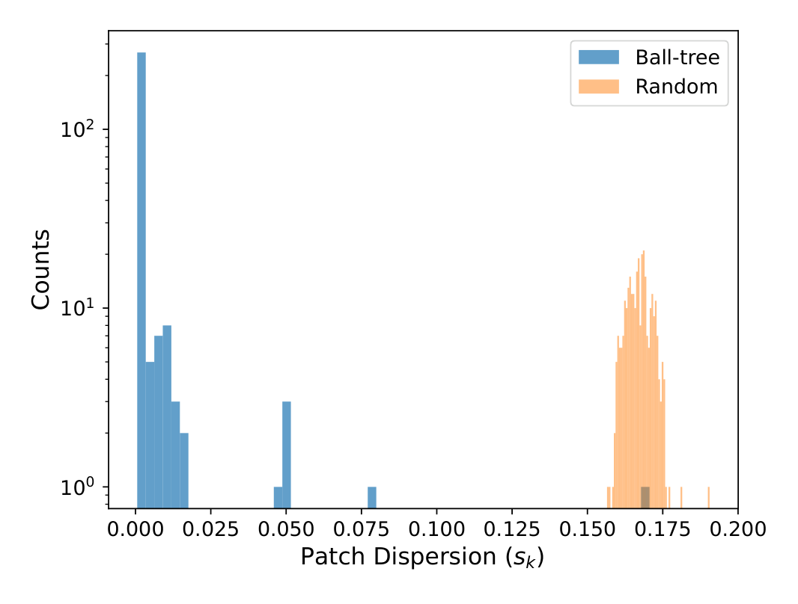

MSPT 深读：百万点物理仿真，怎样用“局部 patch 注意力 + 池化全局”逃出 O(N²)？
导读。MSPT 真正要回答的问题不是“能不能用 Transformer 解 PDE”，而是：工业级物理仿真有上百万个空间点，全注意力 $O(N^2)$ 直接爆显存——可你又必须同时抓住“细粒度局部相互作用”和“长程全局依赖”，怎么两者都要、还能在单卡上跑？它的答案是 Parallelized Multi-Scale Attention：用 ball tree 把不规则点云切成空间连续的 patch，patch 内做局部注意力，再让所有点对“每个 patch 池化出的少量 supernode”做全局注意力。

1. 核心问题：百万点上既要局部又要全局，怎么逃 O(N²)？
神经 PDE 求解器要在数百万空间元素上预测物理场，既要捕捉细粒度的局部相互作用（PDE 的近邻 stencil），又要捕捉长程全局依赖（边界、远场效应）。直接上全注意力是 $O(N^2)$，百万点就爆。
问：那只用局部/窗口注意力（便宜）不行吗？
引导：窗口注意力的感受野随层数只是线性增长。
答：全注意力的平方成本正是稀疏/高效注意力要解决的老问题 [archives/6853]；但纯局部/窗口注意力又走到另一个极端：苏剑林算过，$L$ 层堆叠、窗口为 $w$ 的 window attention，最后一层感受野最大只有 $(w-1)L+1$ [archives/9603]——要靠堆很多层才能让信息传遍全域，对百万点不现实。况且物理网格是不规则的，均匀网格窗口根本套不上。
Takeaway：问题是“既要局部细节、又要一层就能触达全局、还要适配不规则几何、且付得起”。
2. 贡献拆解：作者明确提出了什么？
作者明确提出的贡献：(a) Parallelized Multi-Scale Attention（PMSA），把局部 patch 内注意力与“对池化全局 token 的注意力”合进一次自注意力；(b) MSPT 架构，用 ball tree 把不规则点云/网格切成空间连续的等长 patch；(c) 在标准 PDE 基准与大规模气动数据上验证 SOTA 精度且显存/算力大幅降低，单卡扩展到百万点。
读者能进一步推断的是：这和多重网格（multigrid）的“限制—粗解—延拓”同构——supernode 池化就是 restriction，全局注意力在粗层做长程通信。把这套经典数值思想用注意力实现，是它能既快又准的根。
3. 数据集与任务：从标准 PDE 到大规模气动
任务是算子学习 / 神经 PDE 求解：给定几何与输入场，预测物理场（按 relative L2 评测）。基准覆盖弹性、塑性、流体（Navier-Stokes / Pipe）、多孔流（Darcy）等标准 PDE，以及大规模气动数据集 ShapeNet-Car、AhmedML（百万级点、体场 + 表面场）。这些数据点数与几何不规则度跨度很大，正好压测“可扩展性 + 精度”。
4. Pipeline：切 patch → 池化 → 双尺度注意力
{kind=link}

问：为什么池化只用很少几个 supernode，全局还够用？
答：因为全局依赖通常是“低频/粗尺度”的——远处的影响经过空间平均后仍保留主要趋势。把每个 patch 压成 $Q$ 个 supernode（$KQ\ll N$），既保住了全局通信，又把二次项成本压到极小。这正是多重网格“粗层解长程、细层补局部”的思路。
Takeaway：局部注意力管细节、池化 supernode 管长程，二者在一次注意力里并行完成。
5. 模型与方法：PMSA 的双尺度分解
从点云 $\mathcal{P}=\{\mathbf{p}_1,\dots,\mathbf{p}_N\}$ 与特征 $\mathbf{H}\in\mathbb{R}^{N\times F}$ 出发，切成 $K$ 个等长 patch：
为什么是 ball tree，而不是均匀网格
不规则点云/网格上，均匀网格会给出空格子和大小悬殊、空间不连续的块。MSPT 在坐标上建一棵平衡 ball tree，按叶子的深度优先遍历重排点，再把连续的 $L$ 个点取成一个 patch——于是 patch 是等长、空间连续的局部邻域。这是“patch = 局部邻域”这一前提成立的关键：唯有空间连续，patch 内注意力才真在建模局部物理，而不是把无关的远点混在一起。论文还专门量化了 patch 的空间离散度来验证这点（见消融）。
每个 patch 把 $L$ 个 token 池化成 $Q$ 个 supernode（均值/最大/线性投影），所有 patch 的 supernode 拼成全局上下文 $\mathbf{S}\in\mathbb{R}^{KQ\times F}$：
对每个 patch，把局部 token 与全部全局 supernode 拼在一起做注意力；更新某点时，结果由“patch 内局部注意力”与“对池化全局 token 的注意力”两项相加：
为什么既省又准：看复杂度
PMSA 的复杂度是 $O\!\big(NL+N^2 Q/L\big)$：第一项是 patch 内局部注意力（对 $N$ 线性），第二项是对全局 supernode 的注意力。虽然仍含 $N^2$，但系数 $Q/L$ 很小（因为 $KQ\ll N$，每 patch 只留极少 supernode），实践中线性项主导。patch 大小 $L$ 是个旋钮：$L$ 大则全局通信便宜但局部更贵，$L$ 小则反之——可按硬件与问题调。这就是它能在单卡跑百万点的原因。承重假设/代价：(i) 物理可被“局部 + 粗尺度全局”分解（多数 PDE 成立，但若有很长程的细结构，池化会丢）；(ii) 池化是有损粗化，supernode 太少会丢全局细节；(iii) ball-tree patch 必须空间连续——否则局部项失效。
6. 实验结果：精度与可扩展性同时成立吗？
{kind=link}

判断：两条独立证据合起来支撑主张。精度侧：在弹性/塑性/流体/多孔等标准 PDE（表 B）与大规模气动 ShapeNet-Car / AhmedML（表 C、表 D）上取得 SOTA 或领先的 relative L2。效率侧：见下图，显存与运行时间随点数近似线性增长，远低于全注意力基线，单卡可上百万点。先看精度，再看“便宜”。
| 模型 | Elasticity | Plasticity | Airfoil | Pipe | Navier-Stokes | Darcy |
|---|---|---|---|---|---|---|
| FNO [20] | / | / | / | / | 15.56 | 1.08 |
| WMT [12] | 3.59 | 0.76 | 0.75 | 0.77 | 15.41 | 0.82 |
| U-FNO [42] | 2.39 | 0.39 | 2.69 | 0.56 | 22.31 | 1.83 |
| geo-FNO [24] | 2.29 | 0.74 | 1.38 | 0.67 | 15.56 | 1.08 |
| U-NO [34] | 2.58 | 0.34 | 0.78 | 1.00 | 17.13 | 1.13 |
| F-FNO [37] | 2.63 | 0.47 | 0.78 | 0.70 | 23.22 | 0.77 |
| LSM [43] | 2.18 | 0.25 | 0.59 | 0.50 | 15.35 | 0.65 |
| Galerkin [4] | 2.40 | 1.20 | 1.18 | 0.98 | 14.01 | 0.84 |
| HT-Net [25] | / | 3.33 | 0.65 | 0.59 | 18.47 | 0.79 |
| OFormer [22] | 1.83 | 0.17 | 1.83 | 1.68 | 17.05 | 1.24 |
| GNOT [14] | 0.86 | 3.36 | 0.76 | 0.47 | 13.80 | 1.05 |
| FactFormer [23] | / | 3.12 | 0.71 | 0.60 | 12.14 | 1.09 |
| ONO [45] | 1.18 | 0.48 | 0.61 | 0.52 | 11.95 | 0.76 |
| Transolver [44] | 0.64 | 0.12 | 0.53 | 0.33 | 9.00 | 0.57 |
| Erwin [47] | 0.34 | 0.10 | 2.57 | 0.61 | N/A | N/A |
| MSPT（本文） | 0.48 | 0.10 | 0.51 | 0.31 | 6.32 | 0.63 |
| Promotion | −41% | 17% | +4% | +6% | +30% | −10% |
这张表的诚实之处在于它没有“全列加粗”：MSPT 在 Airfoil、Pipe、Plasticity 上并列或领先，在大规模、强长程耦合的 Navier-Stokes 上把误差从 Transolver 的 9.00 一举压到 6.32（−30%）——这正是双尺度全局通道发挥作用的场景；而在小规模、结构高度规则的 Elasticity（972 点）上反而落后 Erwin 的 0.34（−41%）、在 Darcy 上落后 Transolver 0.57（−10%）。读法很清楚：点数越大、长程依赖越强，双尺度分解的收益越明显；规模小到全注意力本就付得起时，分块反而是负担。这与第 5 节复杂度分析里“线性项主导只在 $N$ 大时才划算”完全一致。
| 模型 | Volume ↓ | Surf ↓ | CD ↓ | ρD ↑ |
|---|---|---|---|---|
| Simple MLP | 5.12 | 13.04 | 3.07 | 94.96 |
| GraphSAGE [13] | 4.61 | 10.50 | 2.70 | 96.95 |
| PointNet [33] | 4.94 | 11.04 | 2.98 | 95.83 |
| Graph U-Net [10] | 4.71 | 11.02 | 2.26 | 97.25 |
| MeshGraphNet [32] | 3.54 | 7.81 | 1.68 | 98.40 |
| GNO [19] | 3.83 | 8.15 | 1.72 | 98.34 |
| Galerkin [4] | 3.39 | 8.78 | 1.79 | 97.64 |
| GNOT [14] | 3.29 | 7.98 | 1.78 | 98.33 |
| GINO [21] | 3.86 | 8.10 | 1.84 | 98.26 |
| 3D-GeoCA [7] | 3.19 | 7.79 | 1.59 | 98.42 |
| Transolver [44] | 2.07 | 7.45 | 1.03 | 99.35 |
| MSPT（本文） | 1.89 | 7.41 | 0.98 | 99.41 |
| Promotion | +8.7% | +0.5% | +4.9% | +0.06% |
| AB-UPT [2]（双分支，参考） | 1.16 | 4.81 | N/A | N/A |
| AB-UPT [2]（复现） | 2.51 | 7.67 | 2.20 | 97.48 |
在所有单分支模型里 MSPT 体场误差 1.89 最低，比次优 Transolver 的 2.07 降 8.7%，阻力系数 0.98 vs 1.03（−4.9%）、排序 ρ 99.41 也最好。值得注意的是 AB-UPT 原始报告的 1.16/4.81 更低，但那是双分支、面/体分开的专用架构；在作者用同一训练管线的复现里它退到 2.51/7.67，反而被 MSPT 全面反超——这条对照正是论文“先把单分支做扎实、分支化作为正交增强”的论据。
| 模型 | Volume ↓ | Surf ↓ |
|---|---|---|
| PointNet [33] | 5.44 | 8.02 |
| Graph U-Net [10] | 4.15 | 6.46 |
| GINO [21] | 6.23 | 7.90 |
| LNO [41] | 7.59 | 12.95 |
| UPT [1] | 2.73 | 4.25 |
| OFormer [22] | 3.63 | 4.12 |
| Transolver [44] | 2.05 | 3.45 |
| Transformer [22] | 2.09 | 3.41 |
| MSPT（本文） | 2.04 | 3.22 |
| Promotion | +0.49% | +6.67% |
| AB-UPT [2]（双分支，参考） | 1.90 | 3.01 |
| AB-UPT [2]（复现） | 2.39 | 4.33 |
AhmedML 单样本就有 2×10⁷ 点——这正是“全注意力 O(N²) 根本跑不动”的尺度。MSPT 仍以单分支拿下单分支最优（体 2.04、面 3.22，面场比 Transolver 降 6.67%），并在作者复现口径下超过双分支 AB-UPT（2.39/4.33）。把表 B→C→D 连起来看，结论随规模单调增强：基准越大，PMSA 越占便宜。
{kind=link}

问：精度高会不会只是模型更大，而非双尺度设计？
答：论文用消融把因素拆开——池化方式与 supernode 数量的研究（图：pooling/supernode study）显示全局通道确实贡献精度；而“patch 空间离散度”的统计（直方图 + 各基准的 patch 半径中位数）独立验证了 ball-tree patch 足够紧凑，支撑“局部项有效”这一承重假设。
Takeaway：主张成立的边界是“可被局部 + 粗尺度全局分解的大规模物理场”，证据覆盖精度、效率与“patch 是否真局部”三面。
7. 消融：每个设计都必要吗？
消融沿三条线：patch 数 K（即 patch 大小 L=N/K）的精度/显存权衡——对应复杂度里 $NL$ 与 $N^2Q/L$ 的此消彼长；池化方式 + supernode 数（均值/最大/线性，Q 大小）——量化全局通道的收益与“池化有损”的代价；patch 空间离散度（ball-tree DFS 排序后每个 patch 的均方半径直方图与各 PDE 的中位数统计）——直接检验“patch 空间连续”这一前提。三者一起说明：双尺度、ball-tree、池化缺一不可。
| patch 数 K | 32 | 64 | 128 | 256 | 512 | 1024 |
|---|---|---|---|---|---|---|
| Test Loss ↓ | 6.08 | 6.23 | 6.83 | 6.77 | 6.37 | 5.99 |
这条曲线是非单调的，恰好把复杂度公式里的两项张力实测出来：K 很小（32）时每个 patch ≈1000 点、局部上下文充足但只有少量 supernode、全局通道窄，loss 6.08；K 增大到 128–256 时 patch 变小、局部上下文被切碎，loss 反升到 6.83/6.77（$NL$ 项收缩但局部信息不足）；K≥512 后大量 supernode 重新撑起全局交互、loss 又降到 5.99（$N^2Q/L$ 项里 supernode 变多补回长程）。论文的结论是“太少则过度平滑局部、太多则割裂长程”，需要折中——但精度最低点（K=1024，5.99）并非部署点：效率分析显示 K 512–1024 在 1 万点时显存已 >30 GB，因此在 ShapeNet-Car 上选 K=128 作为精度/成本平衡，可在 50 GB 内、0.084 s 跑完一个百万点 batch。显存随点数近似线性：V∈[64,256] 下约 80 万点仍在 A100 的 40 GB 内、100 万点处低于 80 GB——这是“线性项主导”最直接的硬件证据。
另两条线把承重假设钉死：池化——均值池化在各 Q 下都稳定优于最大池化（最大池化放大了不代表 patch 典型值的极值）与可学习线性投影；supernode 数 Q——Q>1（论文扫到 1–32）普遍提升精度，因为单 token 装不下整个 patch 的细粒度信息，但 Q 过大又会抵消池化的省算红利。这两点分别独立验证了“全局通道确有贡献”和“池化是有损粗化、Q 需折中”。
{kind=link}

{kind=link}

问：消融与机理是否自洽？
答：自洽。patch 离散度统计低、patch 紧凑，正对应第 5 节“唯有空间连续 patch 内注意力才建模局部物理”；supernode 太少掉点，对应“池化是有损粗化”。理论预测的两条假设都在消融里被独立检验。
Takeaway：关键不是“用不用注意力”，而是“怎样把局部与全局拆成可并行、可负担的两尺度”。
8. 局限与复现门槛：什么时候要谨慎？
| 边界 | 论文/方法信息 | 读者应如何理解 |
|---|---|---|
| 可分解假设 | 局部 + 粗尺度全局两尺度 | 若存在很长程的细结构，池化会把它抹掉 |
| 池化有损 | 每 patch 仅 Q 个 supernode | Q 太小丢全局细节、太大又抬成本；需按问题调 |
| patch 连续性 | 靠 ball-tree 保证空间连续 | 分块质量直接决定局部项是否有效（消融量化了离散度） |
| 仍含二次项 | $O(NL+N^2Q/L)$ | 点数极大且 Q/L 不够小时，二次项仍可能抬头 |
| 评测范围 | 标准 PDE + ShapeNet-Car/AhmedML | 更复杂多物理场/时变长程耦合仍需验证 |
问：这篇论文最容易被过度宣传成什么？
答：容易被说成“线性注意力解决一切大规模物理”。更严谨的说法是：通过 ball-tree 空间连续分块 + 局部 patch 注意力 + 池化 supernode 全局注意力，MSPT 把成本压成线性项主导，在可分解的大规模物理场上以更低显存取得 SOTA 精度。
Takeaway：强项是“双尺度 + 不规则几何 + 单卡百万点”；边界是可分解假设、池化损失与残留二次项。
结语：几点学术判断
一句话总结：MSPT 把多重网格“粗解长程、细补局部”的老智慧用注意力实现——ball-tree 切空间连续 patch，patch 内做局部、对池化 supernode 做全局，一层之内兼顾两尺度，于是百万点物理仿真在单卡上既快又准。
- 全注意力 $O(N^2)$ 爆，纯窗口注意力感受野 $(w-1)L+1$ 增长太慢——双尺度分解才能既省又触达全局。
- ball-tree 的空间连续 patch 是“patch=局部邻域”的前提；池化 supernode 提供一层就到的全局通道（$KQ\ll N$ 让线性项主导）。
- 代价是可分解假设与池化的有损粗化——很长程的细结构会被抹掉。
资料来源与图像说明
- Pedro M. P. Curvo, Jan-Willem van de Meent, Maksim Zhdanov. MSPT: Efficient Large-Scale Physical Modeling via Parallelized Multi-Scale Attention. CVPR 2026 / arXiv:2512.01738（University of Amsterdam）。
- 本文公式、表格与实验数字以 arXiv PDF 为准；“全注意力平方成本与稀疏化”“窗口注意力感受野 $(w-1)L+1$ 随层线性增长”的视角参考苏剑林 [archives/6853]、[archives/9603]，非本文独有。
- 图像说明：所有正文图为本地 PNG，由
extract_figures.py按论文图号从 arXiv PDF caption 锚定裁切（图 1/2/3/4），路径位于assets/figures/mspt/。